Diary · Southeast Asia · Philippines · Siargao
Siargao, General Luna, September 28 to October 3, 2019
On September 28, 2019 I arrived in General Luna, the main tourist town on the island of Siargao, in the Philippines. I came from Palawan, by plane to Manila and on to Siargao, and then by bus from the airport. This page covers the days from September 28 to October 3. I have only a handful of items from the first three: a photo of the hostel rules, a video and a photo from the first evening, a photo of rice I cooked, and from the third day two videos and three photos. October 1 is the full day, with a cable wakeboarding park in the morning and a long ride north. October 2 is a day by scooter and boat from General Luna to Del Carmen, and for October 3 I have a single video.
In short: an arrival day, a day of cooking and a rented surfboard, a day by the water, and a day on the wakepark and the road north, and a day of boats around Del Carmen, with what the airport transfer, a board, an island-hopping tour, a wakepark session and the Sugba Lagoon boat cost today. The times are my phone's clock, shown by Google Photos in GMT+08:00. The places are Google Photos' pins. I leave out the hostel's name, its Wi-Fi details, the videos, and every photo that shows children.
- Airport to General Luna: Siargao's airport is Sayak Airport (IAO), in the north of the island. Google Maps shows 25 km and about 40 minutes by the fastest route, or 29.6 km and 45 minutes by another.
- Shared van: about 300 to 500 pesos (6 to 10 US dollars) and 45 to 60 minutes, one site says, and vans meet the flights. Another lists a fixed price of 405 pesos from the airport. A hotel pickup is listed at 500 to 1,500 pesos.
- Booking a van: one booking site lists hourly vans between the airport area and General Luna at about 5 US dollars. An airport fee of 20 pesos per person is paid in cash on entering the airport, according to one listing.
- Island hopping: Hostelworld lists a shared island-hopping tour from General Luna at about 15 to 25 euros, and says boats leave from General Luna.
- Wakepark: a one-hour session at Siargao Wakepark is listed at 1,250 pesos on Mad Monkey's page, with the board, an instructor, a sandwich and a drink, and daily opening hours of 8:00 to 16:00. Klook lists the one-hour session at 25.90 US dollars. The park is in General Luna, according to Klook.
- Sugba Lagoon from Del Carmen: the lagoon is a 20 to 30 minute boat ride from the port at Del Carmen, and Del Carmen is about 45 minutes from General Luna by scooter, according to two guides. Sites list the boat at about 1,200 to 2,150 pesos for the whole boat, which can be split, and an entrance fee of about 100 pesos per person. A hostel's board in 2019 listed the lagoon with Kanhagan Island at 2,300 pesos a head for six or more.
- Surfboard rental: about 300 to 500 pesos a day, according to one travel site, and 150 pesos an hour at Cloud 9 beach, according to another. Lessons are listed at about 500 to 1,000 pesos an hour, and a scooter at 300 to 400 pesos a day.
The sources are in the box at the end. These prices change, so check before you go.
September 28: arriving in General Luna
I do not remember when I landed or when I took the bus. Google Photos has no photo from the day before 18:43, and that photo is already pinned in General Luna. It is a photo of the hostel's rules, so I was at the hostel by then. I do not show the photo, because the Wi-Fi name and password are on it, and the name would tell you which hostel it is.
The rules are common to many hostels, so I list them. Check-in was at 14:00 and check-out at 11:00. Quiet time started around 22:00. Food was not allowed in the rooms or dormitories, and you were asked to label your food in the kitchen. Lights, air conditioning and fan go off when you leave, and you do not flush toilet paper or sanitary napkins. The sign also asks you to take care of your valuables.
I took the bus from the airport, and I do not remember what it cost. Today Google Maps shows 40 to 45 minutes for the road, and the box above has the van prices. Google Maps has no bus or van line for this route, so I give the road figures and the listed fares.
The evening: live music
At 20:17 I filmed a video of live music. Google Photos puts it in General Luna, as an estimate. I do not know the name of the place or of the band. I do not show the video.
About half a minute later I took a selfie in the same place. It shows the roof: dark thatch, lit with blue light. I am making a hang-loose sign. I include it because it shows what that kind of open-air place looks like, with a thatched roof and colored lights.
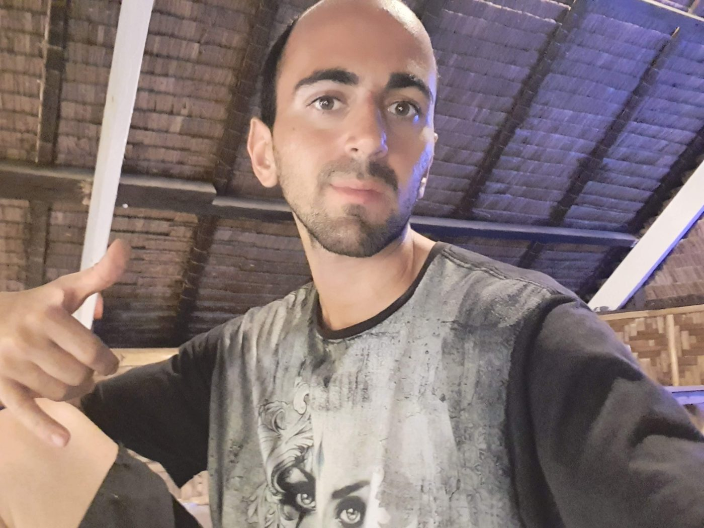
September 29: cooking, and a surfboard
My only photo from September 29 is a pot of rice that I cooked at the hostel. Google Photos pins it in General Luna, as an estimate. The file is a WhatsApp copy, so the time Google Photos shows is not a reliable time of day, and I do not give one. I do not remember what else I put in it.
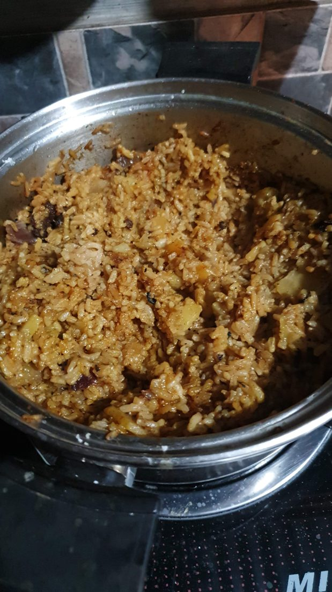
I also rented a surfboard at the same hostel. I surfed every day I was in Siargao. I do not remember the price, how many days I rented it for, or at which beach I surfed. I have no photo of the board or of the sea, so I show none. The board prices in the box above are today's listings, not what I paid.
September 30: the reef, the boats and the pool
On September 30 I took two videos and three photos. Google Photos pins all of them in General Luna. The pin of the 14:20 photo is a GPS pin. The pin of the videos is an estimate. I do not remember how I got around that day. I surfed, as I did every day, but I took no photos of it.
At 13:31 I filmed a 38-second video of a beach at low tide. The water is far from the shore, and what is left is a wide flat of rock and tide pools, with a green headland on one side and a lone rock with a tree on top. The video ends with a row of coconut palms and a sandy track. I do not know which beach it is, so I do not name it. This is a still from the video.
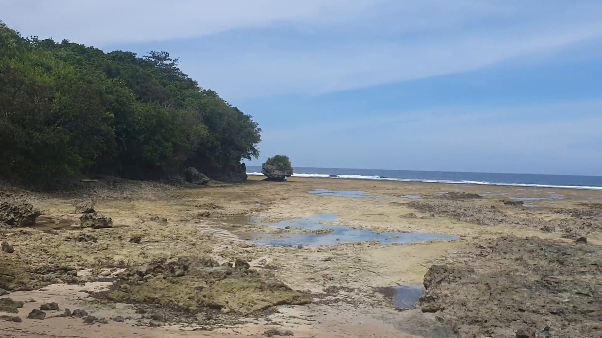
At 14:20 I took a photo and a 22-second video of a beach with many outrigger boats, most of them sitting on the sand at low tide. In the video I walk toward a long wooden pier with a small building at the end, and a person cycles along it. Hostelworld says that boats leave General Luna for island hopping. I do not know whether this is where they leave from.
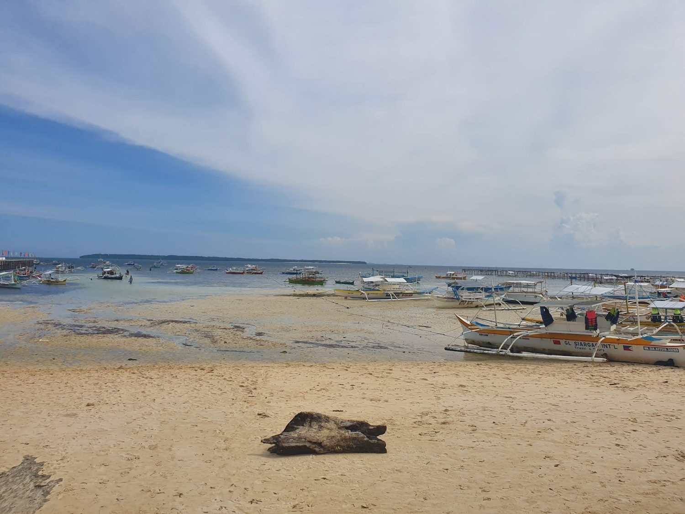
At 15:25 I took two selfies in the hostel garden, one by the pool. I show both. The first shows the hostel's two-storey buildings with thatched roofs and a pink float on the edge of the pool.
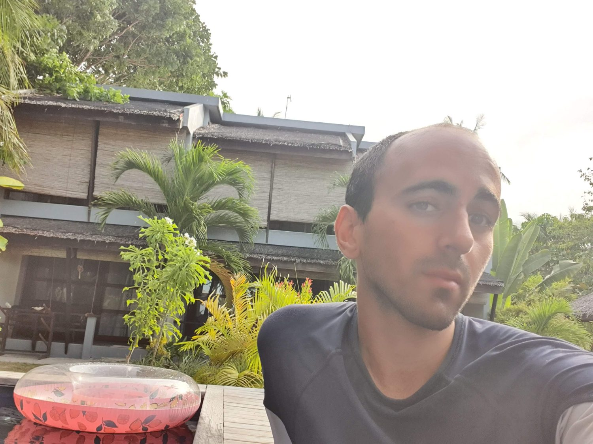
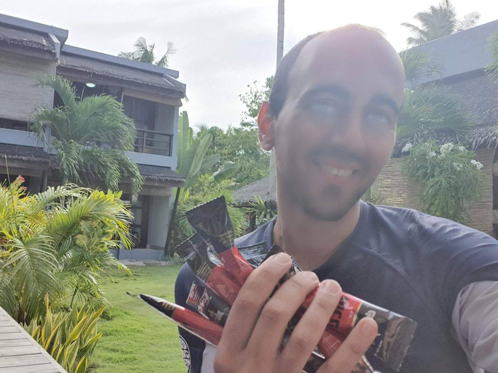
October 1: wakeboarding, a long ride north and a sunset
October 1 is the day I have the most from. Google Photos shows my phone in GMT+08:00. Where I give a place, it is Google Photos' pin, and where there is no pin I say so.
At 08:21 I took a photo of a cable wakeboarding park. A banner at the edge of the lake reads Wakepark Siargao and 1st anniversary, so I know which park it was. The lake is green, a cable runs over it, there are ramps at the far end, and the lake is ringed by coconut palms. I took the photo from a roofed seating area at the edge of the water.
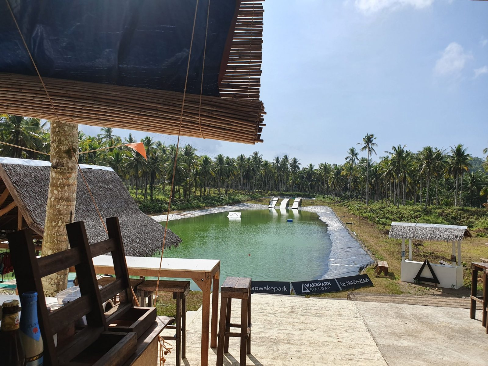
I looked for the park on Google Maps by searching only for maasin river. The first result was Maasin in Iloilo, which is on a different island. I have a screenshot of that search. If you look for the park, search for its full name together with Siargao.
At 09:55 and 09:56 I took several short videos at the park. In one of them I am riding the cable, in a yellow helmet. I do not show the videos. I do not remember what I paid, how long I rode for, or whether it was a lesson, so I use the listings above: Mad Monkey's page lists a one-hour session at 1,250 pesos with board, instructor, a sandwich and a drink, and Klook lists the one-hour session at 25.90 US dollars.
At 10:25 I filmed a grove of coconut palms. At 10:58 I stopped at a river with mangroves on both banks. I do not know the river's name. I took two more photos from a bridge nearby, which show houses built over the water and a boat tied up beside them.
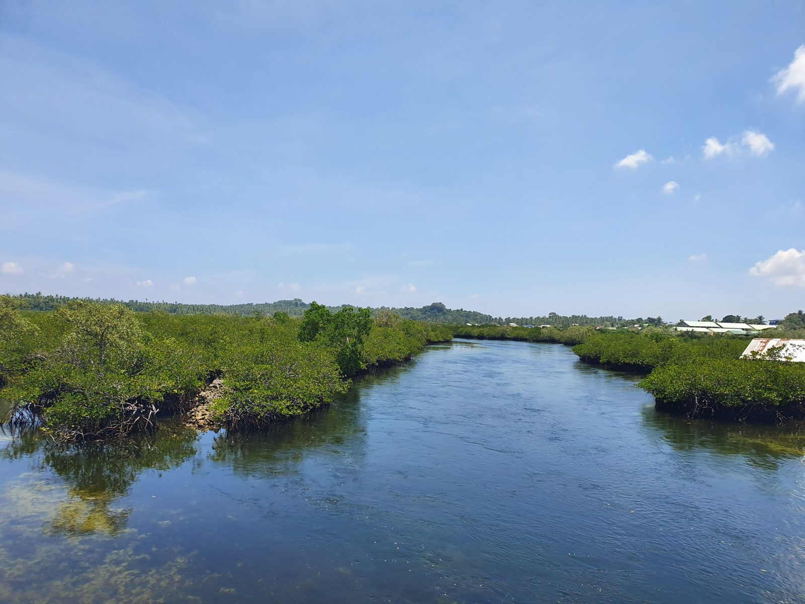
In the late morning I took several photos of rocky beaches at low tide, with tide pools, a rock formation in the water and white sand behind. One of them is at 11:14. I did not check the pins, so I do not name the beaches.
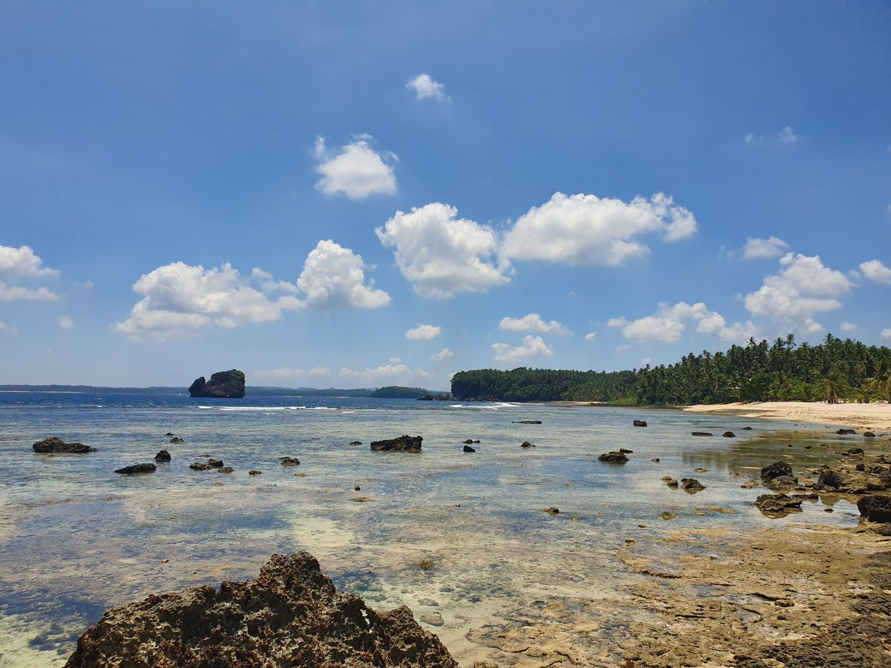
At 13:35 I filmed a video that lasts about four minutes in the yard of a school, and at 13:39 and 13:40 I took selfies there with children who were playing drums and xylophones. Google Photos pins the school in San Isidro. I stopped there by chance, on my way to another destination, and I do not remember which one. I do not show any photo with children in it, and I do not name the school.
At 14:16 I took a photo of a beach from under a tin roof, with clear shallow water and a reef at the edge. At 15:31 I filmed a 38-second video of an almost empty beach with a reef and an island on the horizon. At 16:02 I took a photo of palms leaning over a lawn above a beach. Google Photos pins it in San Isidro, on the road north. At 16:17 and 16:19 I took two photos of a wide bay, one with a surfboard lying on the sand, and at 16:31 a photo of a rocky shore from above.
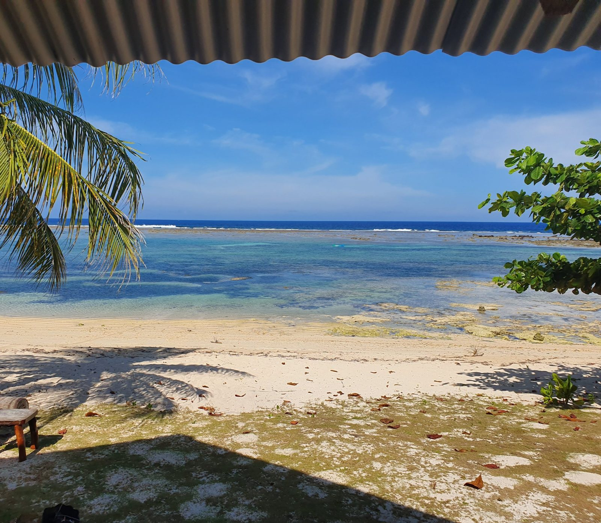
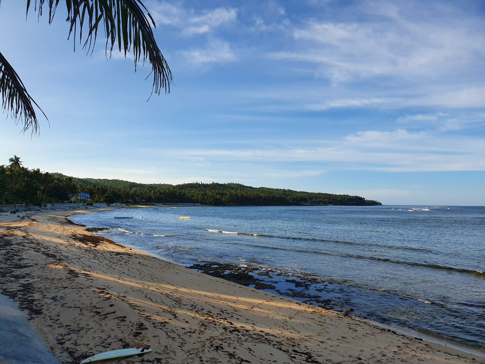
At 17:05 I took a photo and a video of the sunset from a beach with leaning palms. Google Photos pins it in Santa Monica (Sapao), on the north-west coast. The sun was close to the horizon by then, with a long path of light on the water.
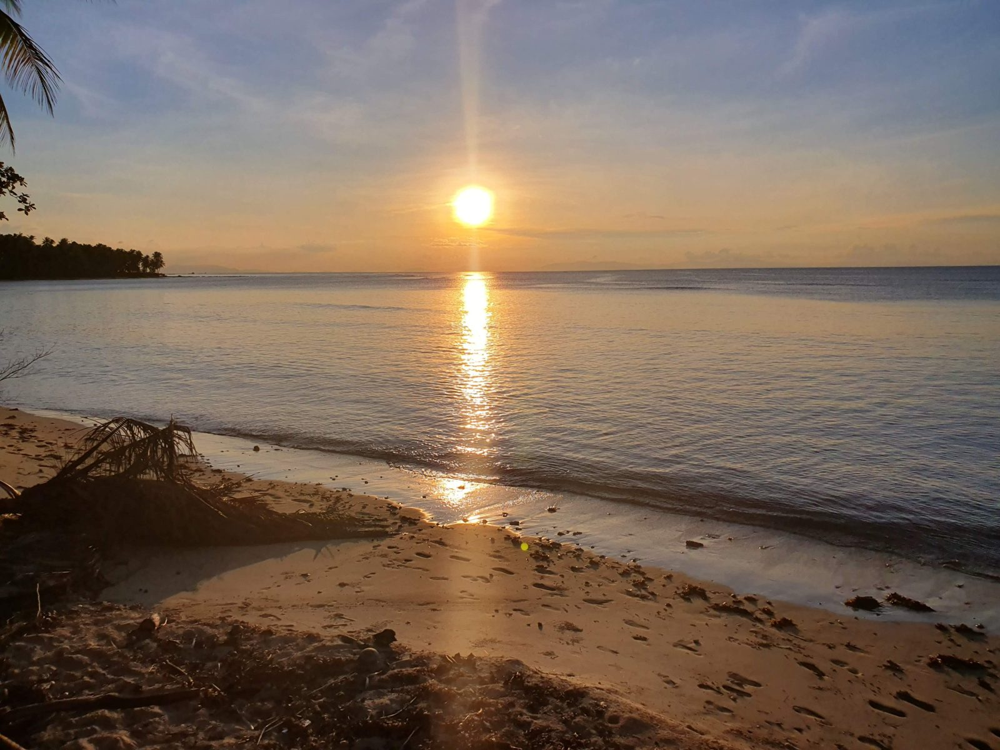
At 17:10 I filmed a small waterfall that falls into a dark pool, with a railing, stone steps and a small hut with a red roof beside it. I filmed it from a motorbike, and its mirror is in the frame. I do not know the waterfall's name, and Google Photos has no pin for the video.
From 17:17 to 17:28 I took photos and videos at a small fishing harbor, also pinned in Santa Monica (Sapao): outrigger boats at anchor, bamboo fish traps in the shallow water, a concrete pier that runs far out into the bay, and the sun going down over the water. I do not show them, because they would only repeat the sunset above. I slept at the same hostel as on every night of this stay.
October 2: scooter and boats from Del Carmen
On October 2 I rode a scooter from General Luna to Del Carmen, on the west side of the island. Google Photos pins my first photo there, at 13:02, at the town's river harbor. I did not go with a tour. At the harbor I met two Italians and two Filipinas, and we shared a boat and spent the day together by chance. I do not remember what I paid or what the price included. At the harbor the two Filipinas ate balut, a boiled duck egg sold as a street snack. I ate nothing.
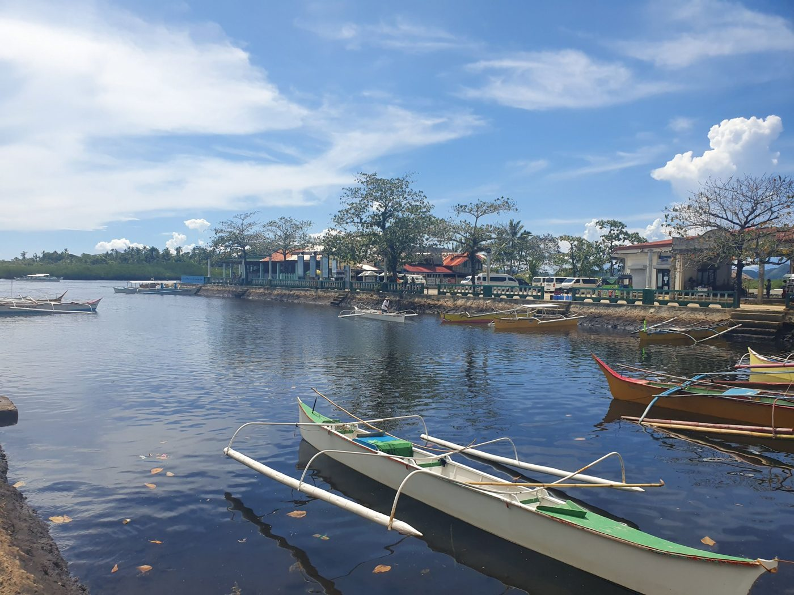
At 13:18 I photographed a relief model of the island under glass, with its hills and bays. I do not know where it stood or what it showed in detail. At 13:25 I took a photo from the bow of the boat, over the outrigger beam, with mangroves along a low shore and a pale sky.
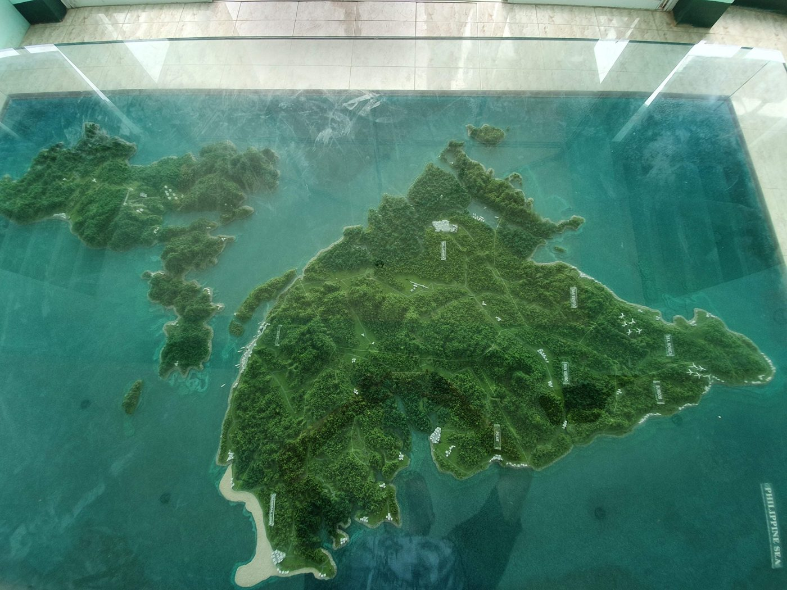
The route, as I remember it, took in Sugba Lagoon and the Maasin River, and I am not sure I remember every stop. At 14:02 I filmed a video of the lagoon, where there is a diving tower over the water, and at 13:45 and 15:10 I photographed a village built on stilts over the water. Google Photos has no exact pin for the photos taken from the boat, only the name Philippines.
At 15:15 I photographed a white lifeguard tower that stands in the water on the reef, and Google Photos pins it in Del Carmen. From 15:24 to 15:29 we were on a sandbar of white sand, with a palm island at its end and the boats pulled up on the sand, also pinned in Del Carmen. I do not know the name of the sandbar or its island. One of the sites below lists a sandbar next to Sugba Lagoon on a tour, but I have not checked that it is the same one.
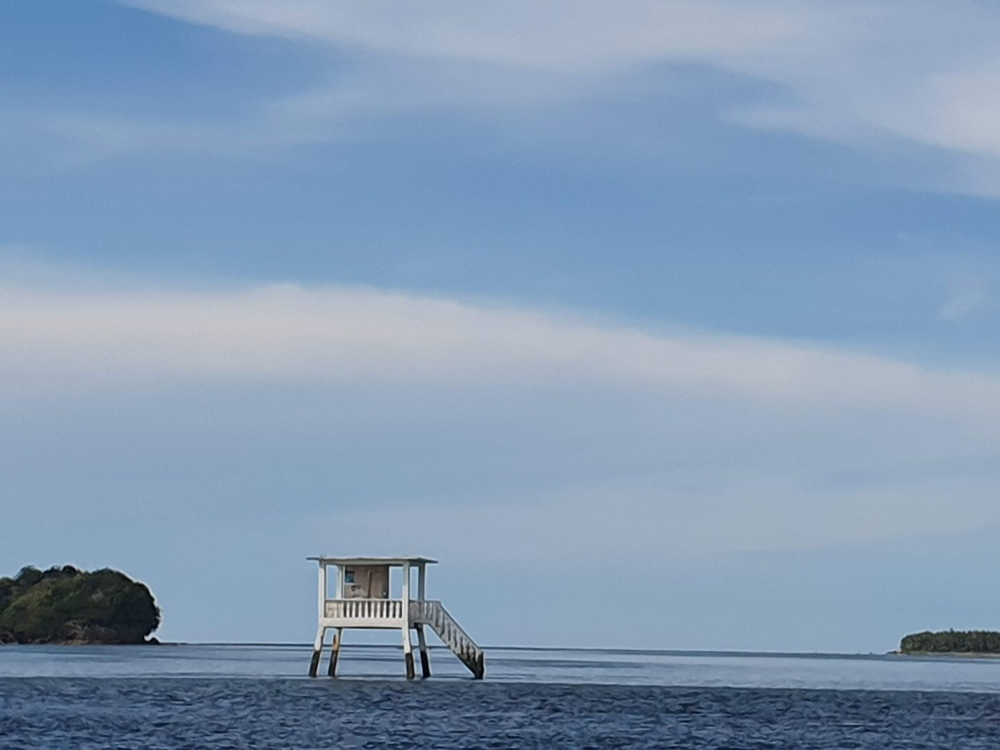
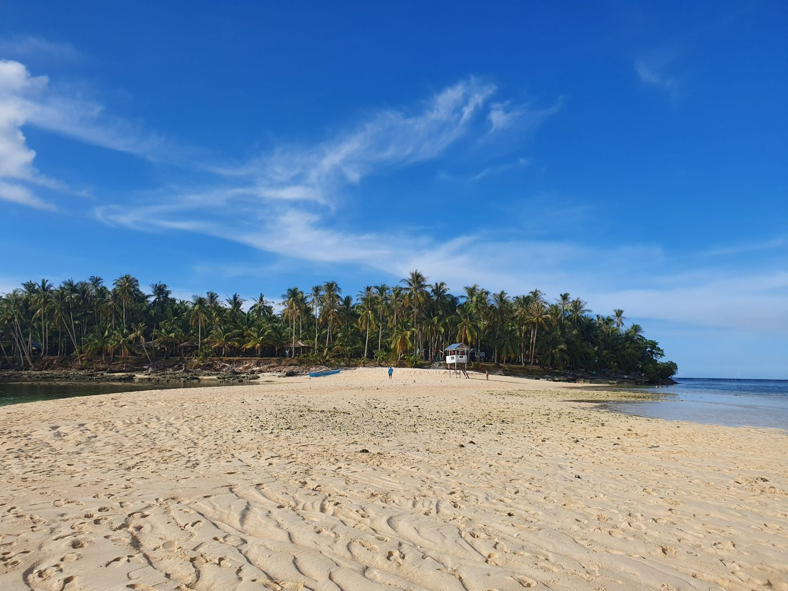
At 16:59 we were already heading back, and at 17:05 I photographed the sunset over the water from the boat, with the outrigger beam in the corner. At 17:29 I filmed the harbor at dusk. At 17:30 I took a selfie by the river, with a thin crescent moon in the sky, fishing boats and the white "WELCOME" arch in the background, and then a few photos of me sitting on the harbor railing. I leave out the group photos and the photos with other people in them.
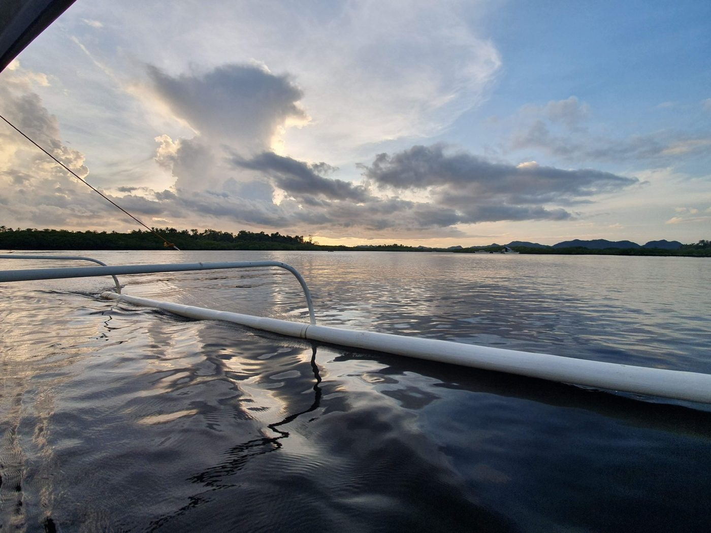
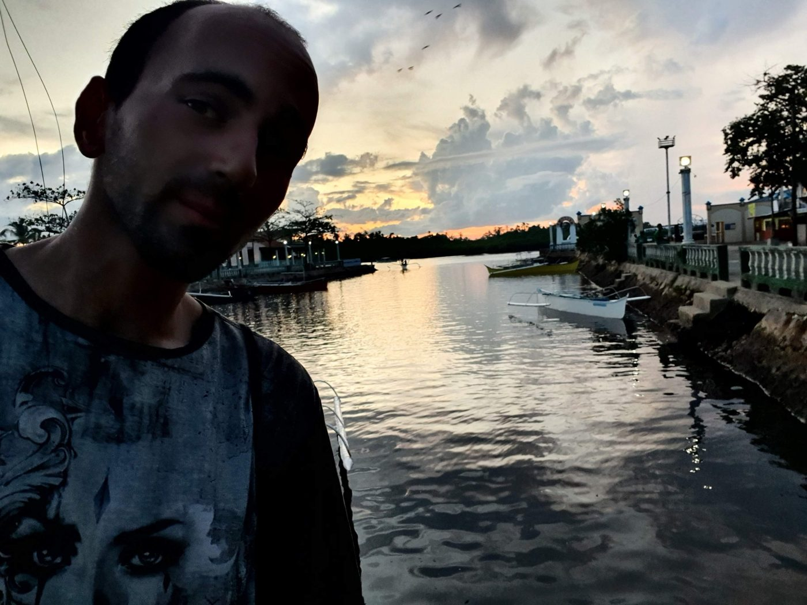
At 22:01 I was back at the hostel and photographed a board of its tour prices in 2019, which is a useful record. It listed, per head, for six or more: Naked, Daku and Guyam islands at 1,200 pesos, Sugba Lagoon with Kanhagan Island at 2,300 pesos, Magpupungko with the Maasin River at 1,300 pesos, Casulian with Dagohoy Island at 1,500 pesos and Mam-on with Suyangan Island at 1,700 pesos, each with a start at 9:00. A yoga class was listed at 400 pesos. I do not show the photo, because it also shows the hostel's common room.
October 3: a bridge over a river
From October 3 I have one item: a 51-second video that I filmed at 13:49, in landscape. It shows a red steel bridge with a concrete deck and flags along it, a narrow green river below with a concrete landing on its bank, and coconut palms on both sides. A few people stand on the landing and the bank. Google Photos gives it only an estimated location, in Dapa, a municipality in the north-east of the island, so I do not trust it as a pin, and I do not know the name of the river or the bridge. I do not show the video.
What I would do differently
For the wakepark, I would write down its full name and opening hours before I went, and I would not search Google Maps only for the river. For the rest of October 1 I would write down the name of every beach and waterfall I stopped at. I took the photos but not the names, and that is the part of this page I cannot fill in. For October 2 I would write down what the boat cost, what it included, and the names of the stops, and I would keep the receipt for the environmental fee. On the water I had no pin and no name for most of the day. For October 3 I would write down the name of the bridge and the river, because the video alone does not tell me.
- Airport to General Luna: Google Maps, 25.2 km and 40 minutes, or 29.6 km and 45 minutes, checked in November 2026. Geckoroutes lists the fixed 405-peso price. AirConnect's guide lists the shared van at 300 to 500 pesos, 45 to 60 minutes, and hotel pickups at 500 to 1,500 pesos.
- Island hopping: Hostelworld lists a shared island-hopping tour from General Luna at about 15 to 25 euros, and says boats leave from General Luna.
- Surfboard rental: Klook's guide for beginner surfers lists board rental, lessons and scooters. The Manduls lists the hourly price at Cloud 9, and their Cloud 9 guide the scooter price.
- Island hopping: Hostelworld guide to Siargao lists the island-hopping price and says boats leave General Luna.
- Wakepark: Mad Monkey Siargao wakeboarding lists the session at 1,250 pesos and the opening hours. Klook, Siargao Wakepark session ticket lists the one-hour session at 25.90 US dollars and the park in General Luna.
- Sugba Lagoon: Jonny Melon's 2026 guide lists a boat at about 2,150 pesos for the whole boat, an entrance fee of 100 pesos per person and about 45 minutes from General Luna by scooter. Mariden Resort's guide lists a boat at 1,200 to 1,500 pesos for up to six people, an environmental fee of about 100 pesos and a 20 to 30 minute boat ride from Del Carmen port. We Seek Travel says it checked its prices for 2026 and that groups now get a maximum of 3 hours at the lagoon. The 2019 prices come from a photo of a hostel board that I took.
- Booking: 12Go, General Luna to Siargao lists the hourly vans at about 5 US dollars. Pelago lists the airport fee of 20 pesos per person in cash.
These are prices and notes as listed today, not what I paid.
What I do not remember
I do not remember when I landed, which flights I took, how I got from the airport to the hostel, what it cost, what I did in the day before 18:43, the name of the place with the music or who played. For the 30th I do not know which beach is in the videos, and I did not photograph the surfing. For the 29th I do not remember what else I cooked besides the rice, what the board cost or where I surfed. For October 1 I do not remember what the wakepark session cost, how long I rode, the names of the river, the beaches and the waterfall, or where I was heading when I stopped at the school. For October 2 I do not remember what the boat cost, what it included, every stop on the route, the name of the sandbar, or how long we stayed at each place. For October 3 I do not remember anything beyond the video: where I went, what I did with the rest of the day, or how I got off the island and on to Vietnam, where my next photos are from October 7.